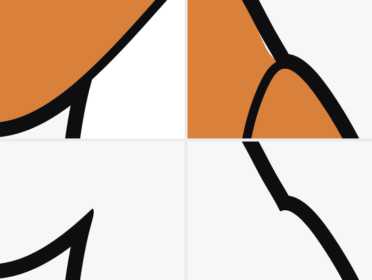
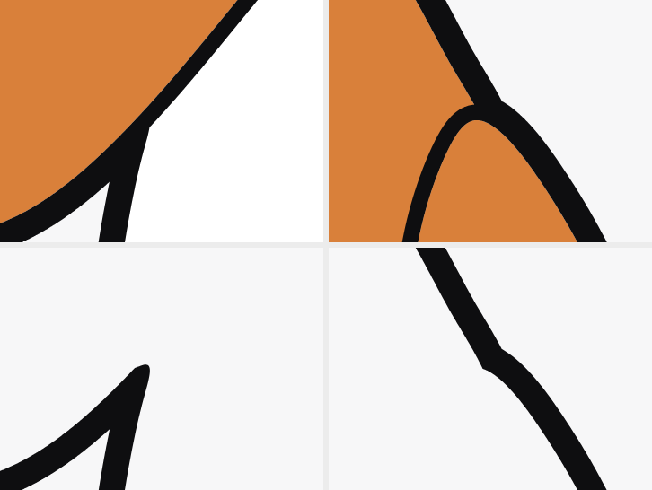
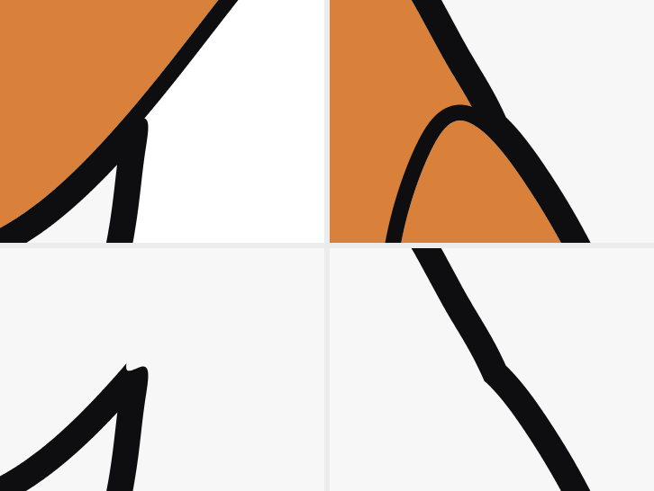
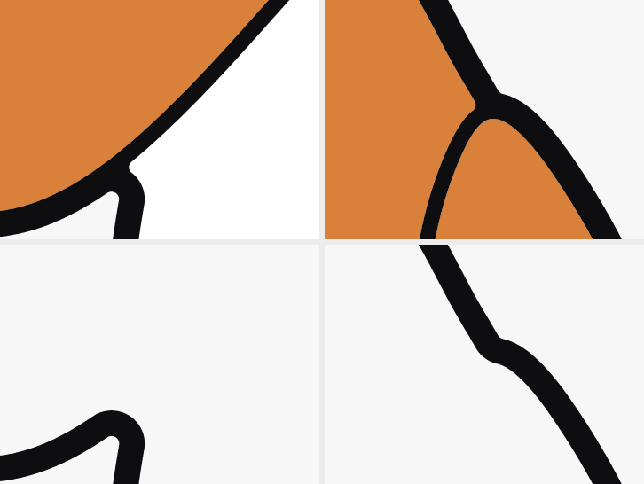
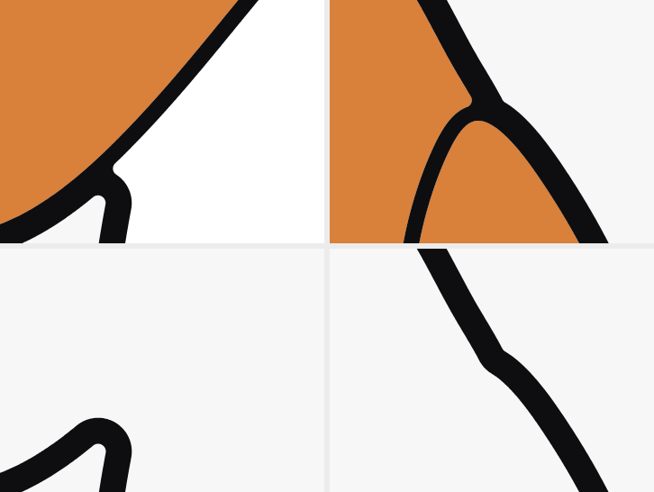
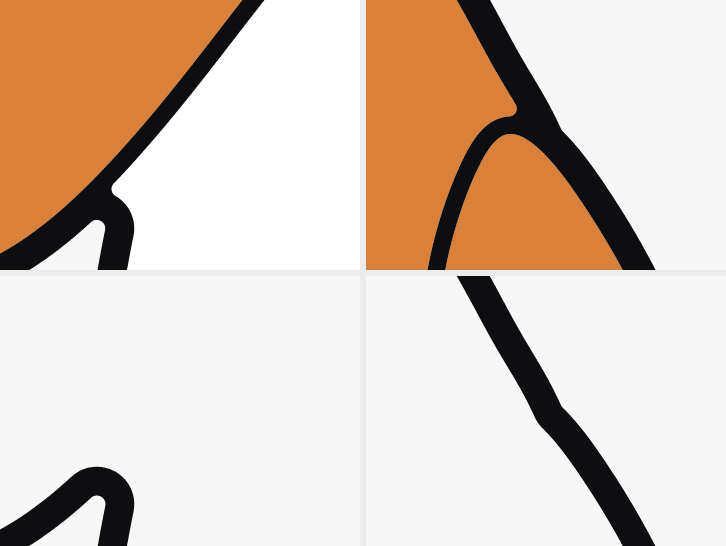
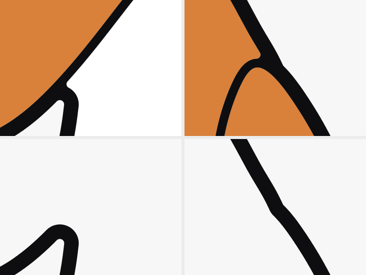
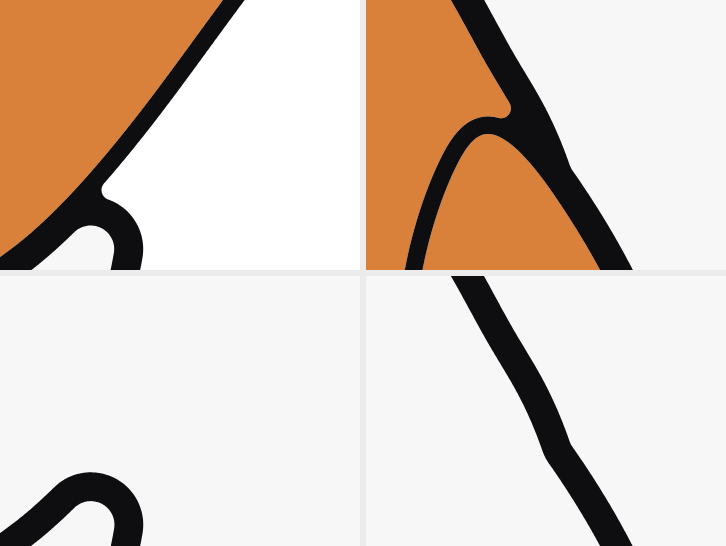

阿图 · 线条软化探索
- 分支
explore/soft-joints-turn，现行规范和所有物料都没动。 - 一笔转角（第二版）：先把笔的中心线在耳朵和头的交点处转成小圆弧，再从中心线向两侧各让出半个线宽。转角的内外两条边是同心圆弧，线宽始终不变，不再有尖角或方形的痕迹。J1/J2 同时补上了眼斑和轮廓线之间的白缝。
- 微侧脸：脸朝画面左边转一点。眼睛、眼斑、耳朵跟着转；左下脸颊鼓出一道弧，像蜡笔小新的脸，不再是正圆。
- 每组：描边版 · 线条版（刺绣）· 彩色深底；下面是两个连接处的放大。
00 · 现行规范（对照）
硬拼接，正脸

S1 · 现行 + 微侧 6°
线条和转角保持现行，只把脸微侧（同 T1 的侧法）

S2 · 现行 + 侧 10° + 小新式脸颊
线条和转角保持现行，侧脸同 T3


J1 · 一笔转角 · 小
线的中心线转弯半径 = 0.8 倍线宽；内外两条边同心，线宽不变


J2 · 一笔转角 · 中
中心线转弯半径 = 1.3 倍线宽

T1 · J1 + 微侧 6°
五官和耳朵跟着转，脸颊轻轻鼓一点


T2 · J1 + 侧 10° + 脸颊弧
左下脸颊鼓出一道弧

T3 · J1 + 侧 10° + 小新式脸颊
脸颊鼓出，上方轻收一点腰

T4 · J2 + 侧 14° + 小新式脸颊
侧得更明显，作为上限参考
